Overview
About Me

Hello! I'm Ashlee M. Madriñan, a passionate 3rd-year IT student from Holy Cross of Davao College with a keen interest in UI/UX Design. I am also developing strong skills in database management, specifically with MySQL, PostgreSQL, and Cybersecurity. I believe in creating user-centered solutions that are both functional and beautiful.
Cisco: Introduction to Cybersecurity
Achieved student-level credential covering cybersecurity basics, common threats, vulnerabilities, and organizational defense strategies.
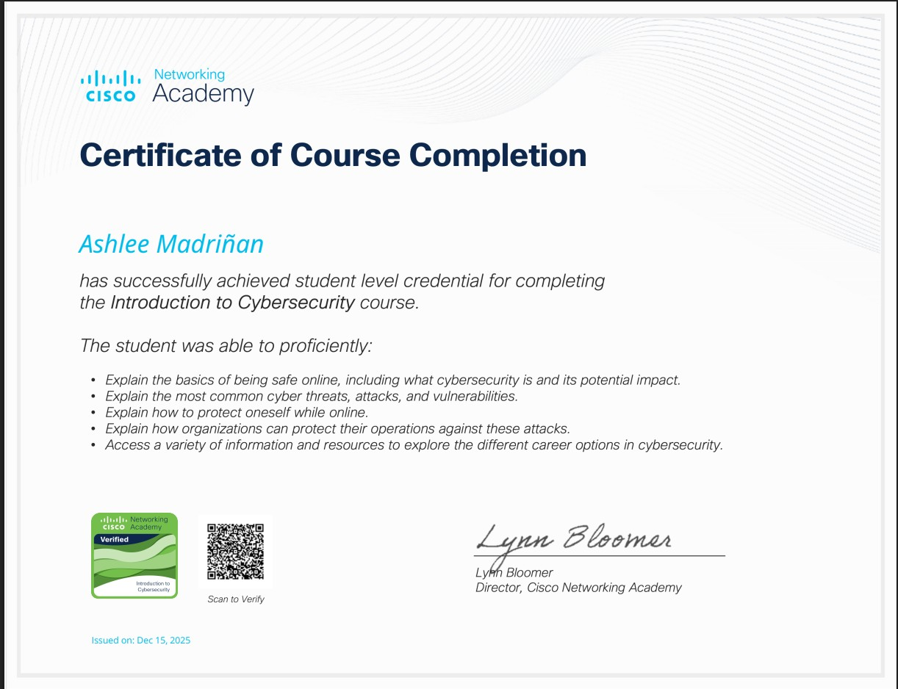Cebu-Bohol Educational Tour
Successfully completed the required educational tour, gaining firsthand exposure to real-world IT applications in business operations, UI/UX, and data management.
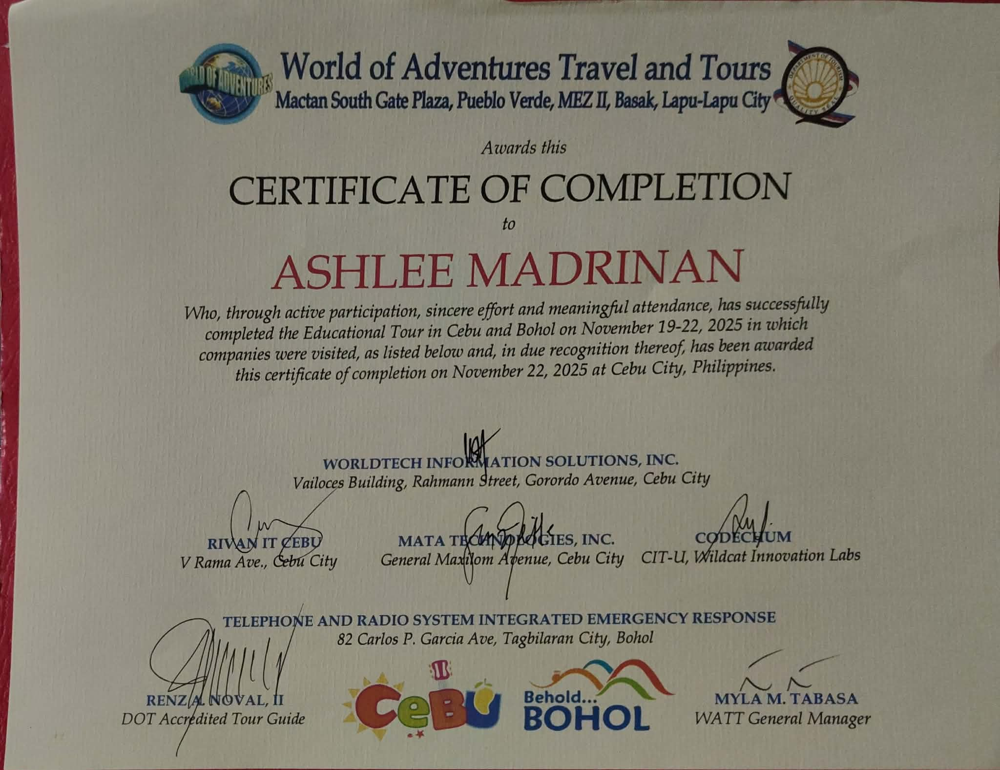Certificates validate specific skills and knowledge gained outside of standard coursework, directly enhancing your professional credibility to potential employers.
Educational Learnings
Tour Reflection & Learnings
Overall Experience (Cebu-Bohol)
The Cebu-Bohol Educational Tour (November 19-22, 2025) was an excellent and very accommodating experience. The bus ride was comfortable, and the tour guides were highly commended for being very accommodating and very good. My overall experience was accommodating and the best tour.
*Scanned Journal Entry - Overall Thoughts*
Visit 1: WORLDTECH INFORMATION SOLUTIONS, INC.
Date: November 19, 2025 | Facilitator: Elizabeth Aquiza
I was amazed by the company's Cisco equipments and abundance of servers. The facility was well-ventilated and aesthetically pleasing.
Key Learnings:
- The host's explanation of hacking and how culprits use it to defraud banks was highly educational.
- This reinforced the critical need for better technology securing in all professions.
- The experience inspired me to pursue more certifications in Cyber Security, recognizing that cyber security is everyone's responsibility and part of life.
*Scanned Journal Entry - WORLDTECH Learnings*
Visit 2: RIVAN IT Cebu
Date: November 20, 2025 | Facilitator: Vincent Victor
The visit to RIVAN IT focused on their approach to client solutions and technical support. It provided insight into the operational side of a smaller, dedicated IT service company.
Key Takeaway:
- Importance of clear communication in client-facing IT roles.
- Understanding the lifecycle of providing technical solutions from consultation to implementation.
Scanned Journal Entry - RIVAN IT Learnings
Visit 3: CODECHUM
Date: November 20, 2025 | Facilitator: Xavier David Maranga
The office environment was well-ventilated and aesthetically pleasing, creating a welcoming atmosphere. The host, Sir Xavier, was described as well-spoken.
Key Learnings:
- The main point of CODECHUM is to make programming interesting, fun, and simple.
- Observed the use of an AI grading system for automatic code checking.
- The visit emphasized the importance of continuous learning: "Never stop learning. Keep moving forward.".
- As an IT student, I realized the need to pursue things I am passionate about.
Scanned Journal Entry - CODECHUM Learnings
Visit 4: MATA Technologies, Inc.
Date: November 21, 2025 | Facilitator: Suzzette Cabinero
The MATA Technologies visit provided insight into business operations and the integration of technology in modern enterprises. It highlighted different career paths within the IT field beyond development.
Key Takeaway:
- Understanding the role of IT in business strategy and management.
- Exposure to various departments within a large technology firm.
Scanned Journal Entry - MATA Tech Learnings
Visit 5: Tagbilaran 911
Tourist Assistance and Rescue Section, Immediate Emergency Responders
Date: November 22, 2025 | Facilitator: AJ Lacea
Key Learnings:
- I learned how they use real-time surveillance and communication systems to respond quickly to emergencies.
- Their team's work and technology play a big role in keeping the community safe and supporting tourists in Bohol.
.jpg)
Scanned observation notes on the Tagbilaran911 Team
Detailed Itinerary
Company Visits & Educational Events
Company Visited: WORLDTECH INFORMATION SOLUTIONS, INC.
Date: November 19, 2025 | Arrival at Mactan Cebu International Airport. Afternoon visit and educational seminar at Worldtech Information Solutions, Inc.

WORLDTECH Information Solutions, Inc. Visit
Reinforced the critical need for robust Cyber Security and inspired further certification pursuit.
Company Visited: RIVAN IT Cebu & CODECHUM
Date: November 20, 2025 | Morning visit to RIVAN IT Cebu. Mid-day educational seminar and tour at CODECHUM.

RIVAN IT Cebu Visit
CODECHUM Educational Platform Tour
CODECHUM highlighted making programming fun and the efficiency of AI grading systems.
Company Visited: MATA Technologies, Inc.
Date: November 21, 2025 | Morning visit to MATA Technologies, Inc. Afternoon travel via SuperCat to Tagbilaran City port, Bohol.

MATA Technologies, Inc. Visit
Educational Site Visited: Tagbilaran 911
Date: November 22, 2025 | Morning visit to the emergency response center: Tagbilaran 911 Afternoon cultural tour of Bohol (Chocolate Hills, Tarsier Sanctuary, Loboc River Cruise).
Emergency Response System/Tagbilaran 911
Visual Memories
Extra Photos & Gallery (Cebu - Bohol Trip)


 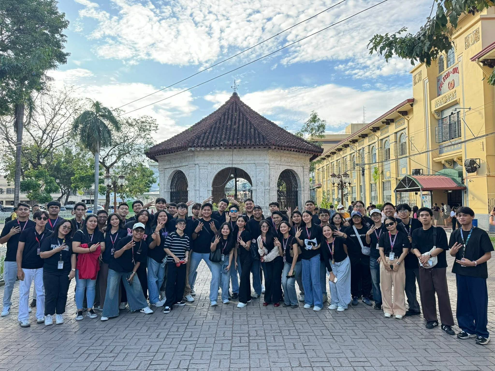
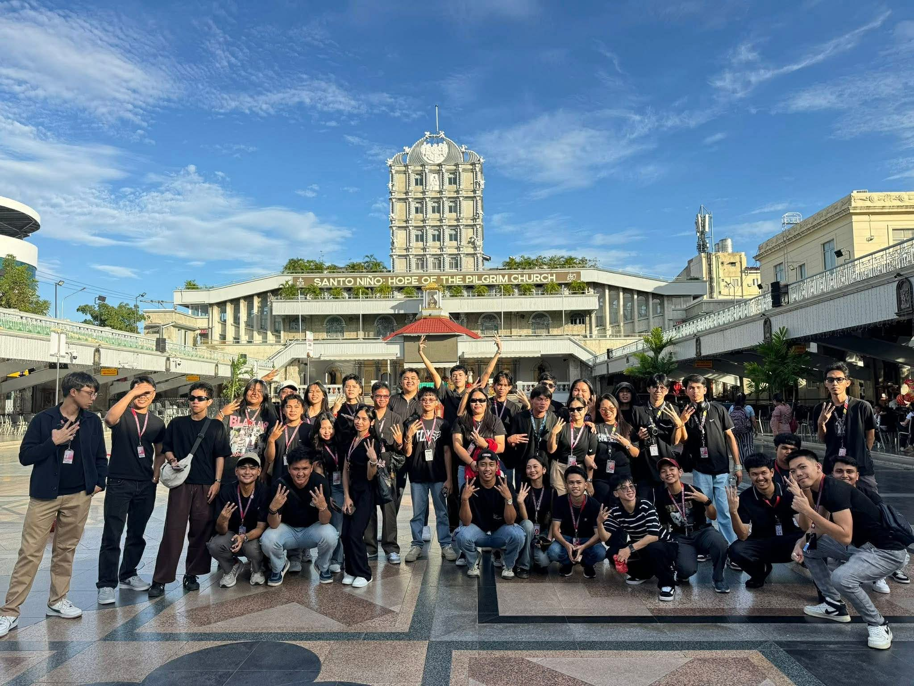
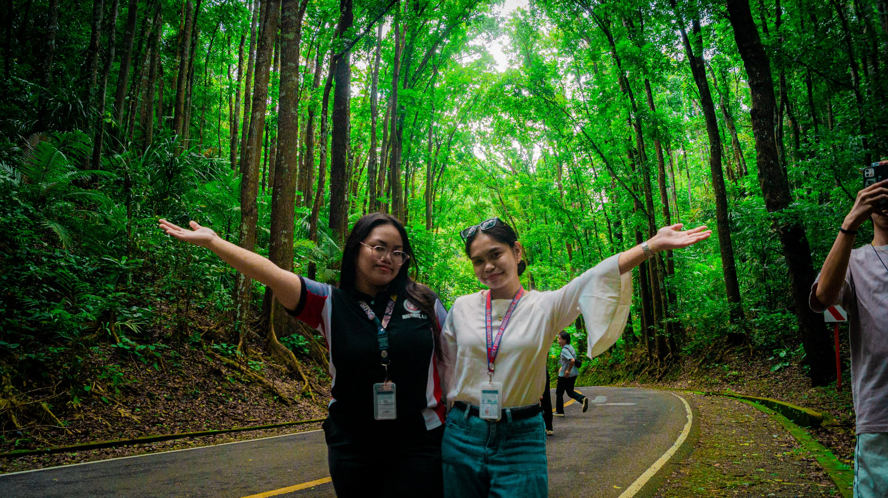
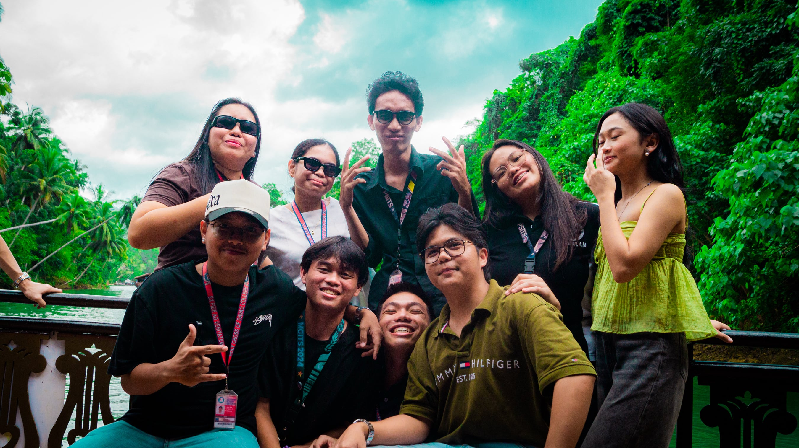
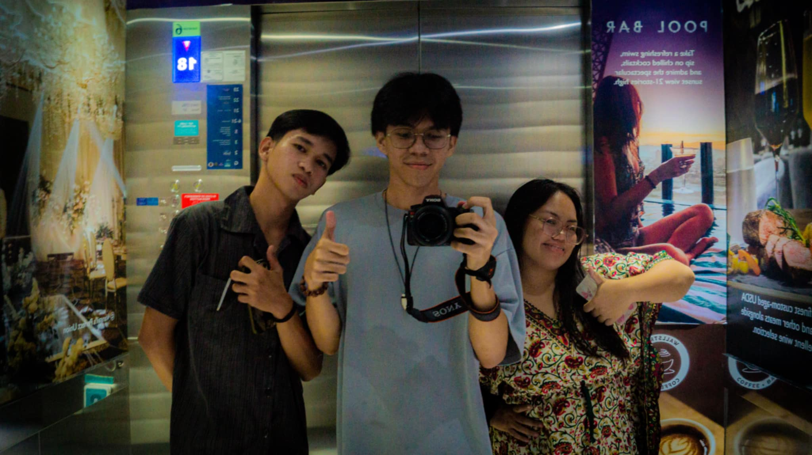
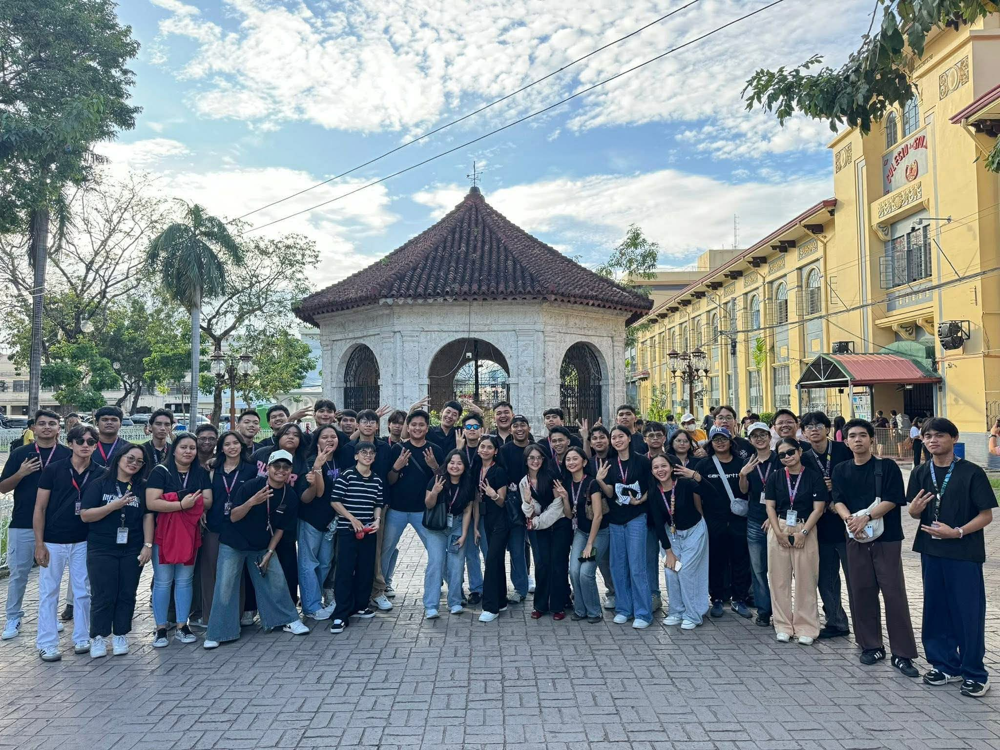
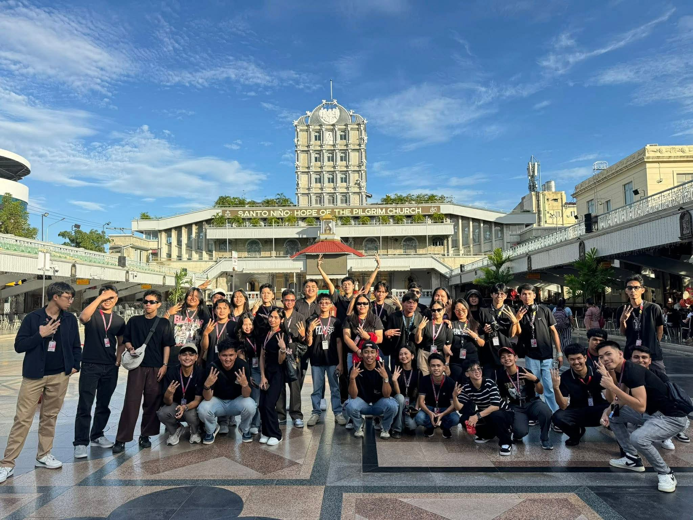
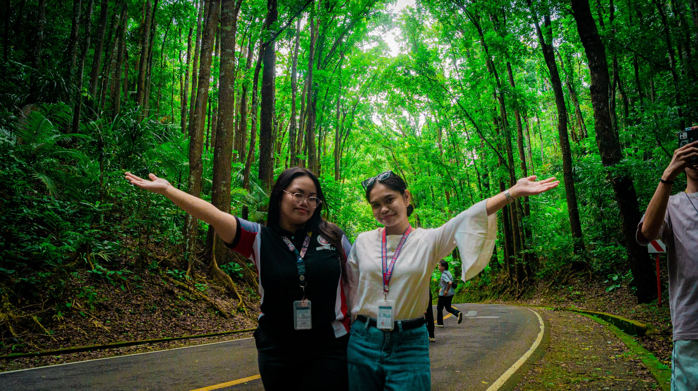
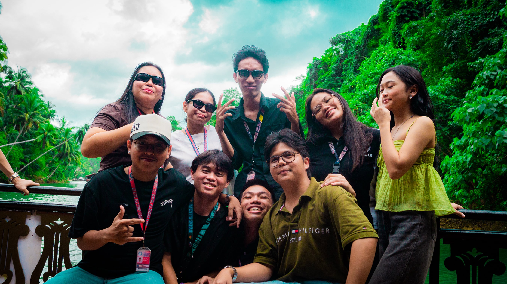
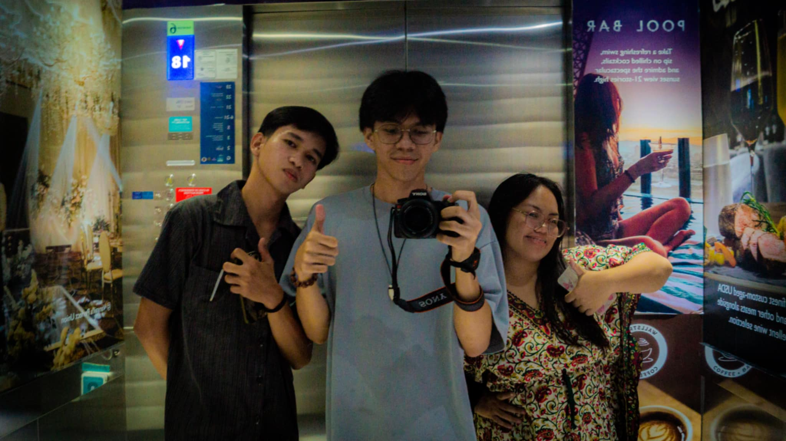
 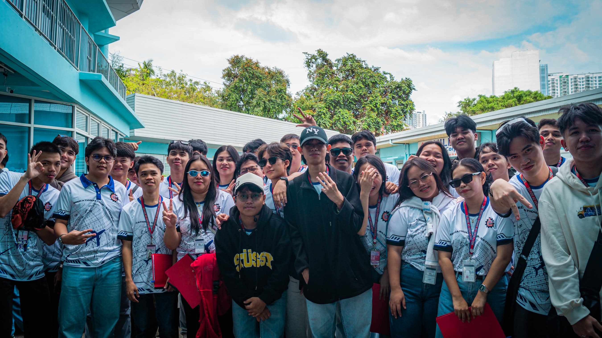
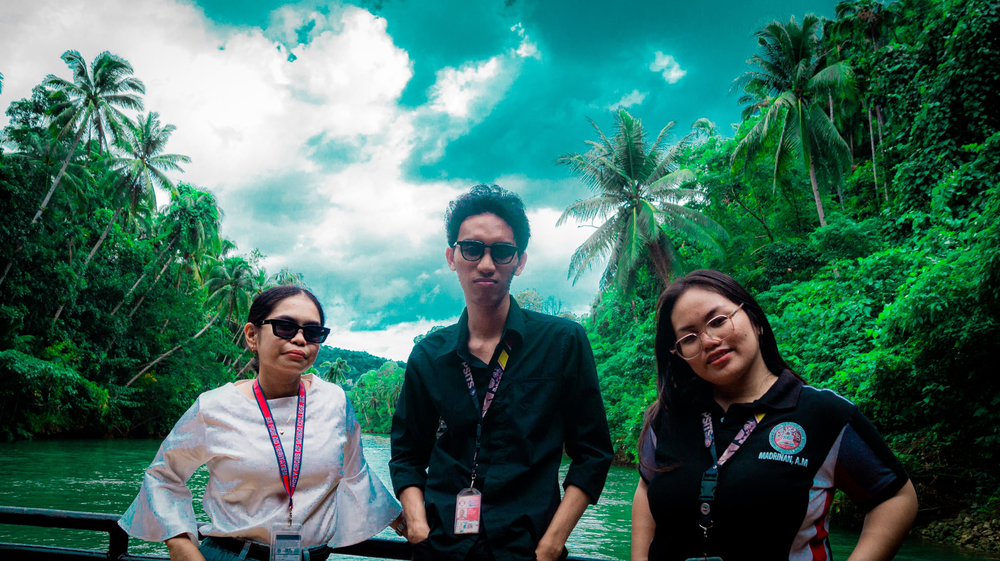
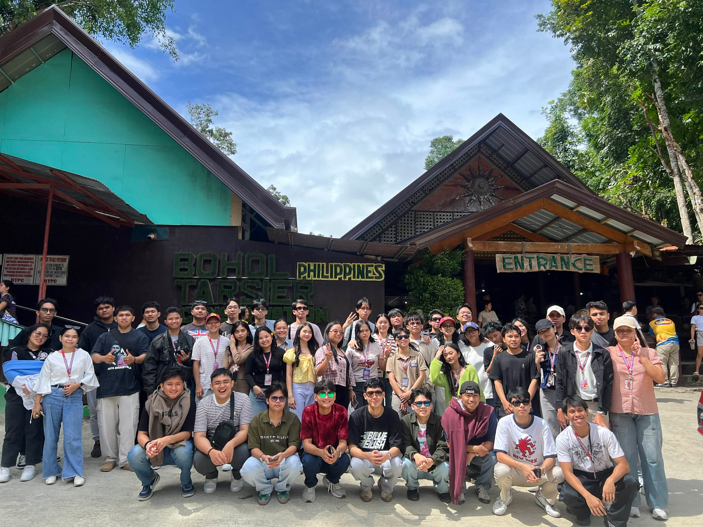
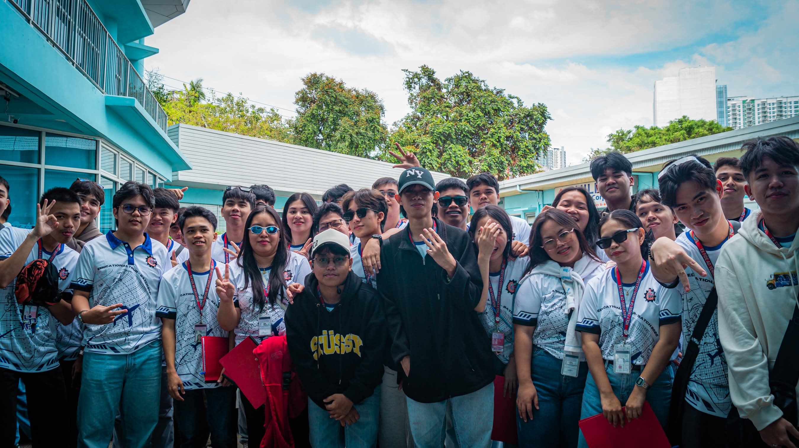
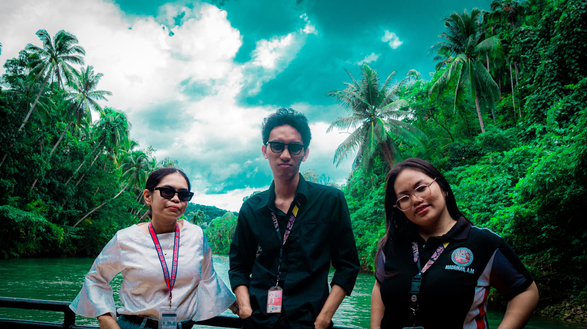
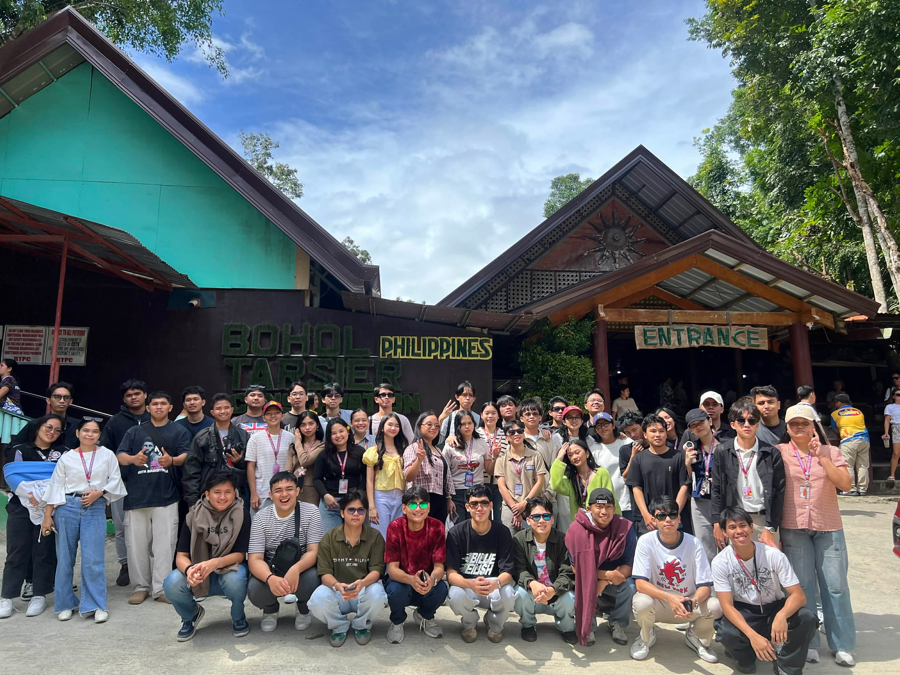

Cebu-Bohol Escapades
Get Connected
Get in Touch
I am always open to discussing new projects, collaboration opportunities, or general IT inquiries. Feel free to reach out!
Phone: +63 912 676 5604
Email: ashleemadrinan3@gmail.com
LinkedIn:/in/ashlee-madrinan
Location: Davao, Davao Region, Philippines
If you are interested for more details add yours below: